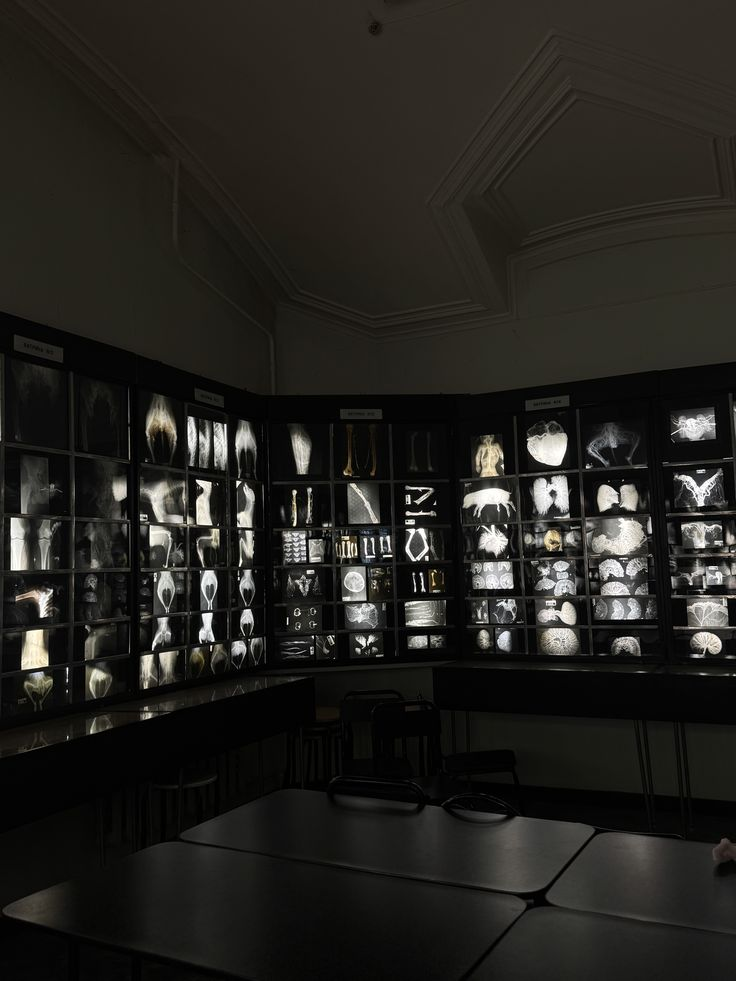
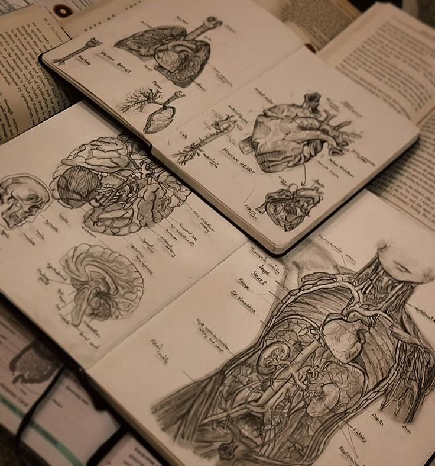
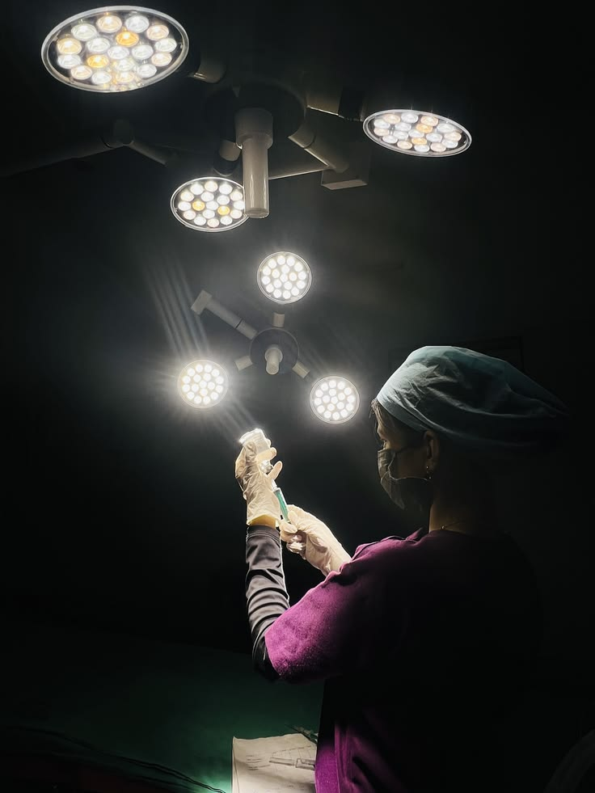

MEDEX
Sprint Review
Sprint 10
Resultados, impacto e próximos passos
Demandas Executadas
5 demandas entregues nesta sprint, com foco em conclusão de curso, redução de fricção e fundações de design system.
Cards PubMed
Integrados
Referências científicas contextuais inseridas no fluxo de estudo. O aluno não precisa mais sair da plataforma para validar informações — redução de tab-switching e aumento de confiança.
Impacto
- Maior contribuição individual da sprint (+3.2%)
- Acesso contextual a evidências reduz interrupção do fluxo
- Engajamento (+22%) indica conteúdo percebido como valioso
- Redução de tab-switching e saída da plataforma
- Aumento de confiança do aluno no material do curso





Otimização de Fluxo
Calculadora de Doses
Remoção de 3 steps redundantes, progressive disclosure e smart defaults — menos decisões desnecessárias para o usuário em cada etapa do curso.
Áreas de Impacto
KPI Dashboard
Resultados consolidados da Sprint 10 — métricas que medem o impacto real das entregas na experiência do usuário.
Redesign
Calculadora
Interface reconstruída com foco em velocidade e prevenção de erro. Auto-fill inteligente, validação inline e feedback visual imediato — a calculadora deixou de ser um blocker no funil.
O que mudar?
- Tempo caiu de 4m30s para 2m48s (-38%)
- Erros despencaram de 18% para 6.8% (-62%)
- Auto-fill inteligente reduz digitação manual
- Validação inline previne erros antes de submeter
- Feedback visual imediato a cada interação
Composição do Crescimento
De 42% para 49.9% — como cada demanda contribuiu para o resultado. Cada barra representa a contribuição isolada de uma feature para o crescimento da Taxa de Conclusão.
Próximas Prioridades
Entregas da Sprint 10 — total de 16 pontos entregues.
Objetivos Sprint 11
- Melhoria constante do Design System v1.0 — fundação para escalar
- Moodboard: aumentar tempo de sessão e retenção D7
- Iniciar discovery de Personalização Adaptativa
- Telas Personalizadas por Especialidade